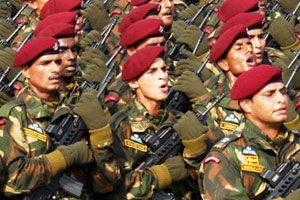

Grit and experience affect the growth of an institution. Fighting four major wars, insurgency and other low intensity
wars has indeed made the Indian Army an eminently and efficient battle trained, war machine.
 Changing times bring changing needs. Battle training must tell also on the structuring of the army, for it is this function that extracts the most from the assets available, both men and material. A look at the command and structuring of the Indian Army shows how finely these have been tuned to meet India's threat perceptions, based on the experience of the major wars that it has fought and the present-day geo-political context.
The largest standing volunteer Army in the world has never had to scour the populace for draft or conscription. There are always more men eager to don olive green than the demand at any one time. But this does not reflect a situation where a large unemployed workforce would get into uniform to keep body and soul together. More to the point is the basic attitude of our people to the call of arms, discovered also by the British, some three centuries before. There are very many who join up for long service tenures under the colors, by inclination and choice - also familial habit and honour. If a young man or woman, sound of body and mind, and of Indian origin, is inclined to spend most of his useful working years in the kind of desolation that the country's Field areas' adjoining the borders provide, can he or she cannot be refused.
As a Candidate, all of you have aspirations and dreams, of what your education will finally yield. If you are looking for a fat pay packet, a corporate job is the answer. But above and beyond this should be the question of what the job offer in totality. Let us see what attributes go into making an excellent career. The attributes that one expects from a satisfying profession are:
If these are what you too are looking forward to, then Army is the profession for you, as these in the Army,
compare far more than favourably with any other service.
All of us are aware that, professions are competitive, in so far as promotions are concerned.
Army is no different. However, as said earlier the competition in the Army is clean and devoid of any other factor but competence.